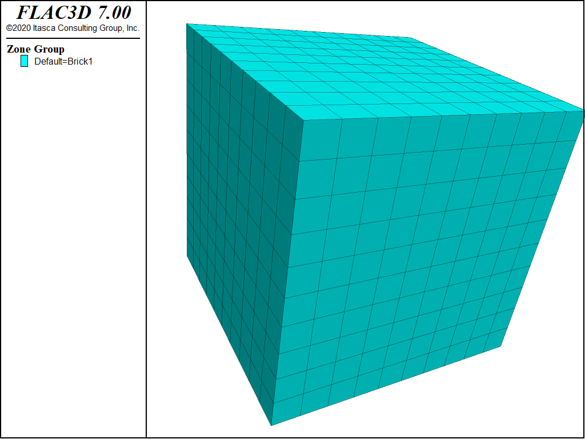

概述
FLAC3D 是用于工程力学计算的三维显式拉格朗日有限体积程序。本程序基于我们二维程序 FLAC 所采用的成熟数值表述。[1] FLAC3D 将 FLAC 的分析能力扩展到三维，可以模拟由土体、岩石或其他表现出路径相关行为的材料组成的三维结构。
材料由三维网格内的多面体单元表示，用户调整网格以适应被模拟对象的形状。每个单元根据指定的线性或非线性应力应变关系，对施加的力或边界约束作出响应。材料可以屈服和流动，网格可以（在大应变模式下）变形，并随其所代表的材料移动。
FLAC3D 采用的显式拉格朗日计算方案和混合离散网格划分技术，确保能非常准确地模拟塑性坍塌和流动。由于不形成矩阵，可以在内存需求不过高的情况下开展大型三维计算。通过自动惯性缩放和自动阻尼，克服显式表述的缺点（即小时间步限制和所需阻尼问题），同时将对破坏路径的影响降至最低。FLAC3D 是求解岩土工程三维问题的理想分析工具。
FLAC3D 专为 Microsoft Windows 系统设计，目前支持 Windows 7、Windows 8 和 Windows 10。对于岩土工程中实际规模的三维模型，可以在合理的时间内完成计算。例如，包含 125,000 个 Mohr-Coulomb 材料网格单元的模型可以在 600 MB RAM 内存中生成。在 3.2 GHz Intel 6-Core i7 CPU 上，对具有 10,000 个网格单元的 Mohr-Coulomb 材料模型执行 5000 个计算步，大约需要 30 秒。[#]_显式计算方案达到求解状态所需的计算步数会有所变化，但对于最多含 10,000 个单元的模型，不论材料类型如何，通常在 3000 至 5000 步内即可得到解。（显式求解方案见理论背景（Theoretical Background）一节。）随着浮点运算速度的提高，以及以低成本增加 RAM 的可能性，FLAC3D 应能求解规模越来越大的三维问题。
FLAC3D 用户界面同时提供命令行（CLI）和图形（GUI）功能。程序操作的所有方面都可通过 i 控制台（Console）窗格中的 CLI 完成。程序 GUI 组件可完成许多但并非全部操作。某些操作（绘图、使用拉伸体或构建块等）通过 GUI 组件执行相对容易，而其他操作通过命令行调用可能更高效（或必须通过命令行执行）。许多 FLAC3D 命令与 Itasca 程序 PFC 中的命令相似或相同，两者共用相同的命令语法和结构。
FLAC3D 提供加速三维图形功能，可以快速显示模型。丰富的绘图功能，包括轻松构建动画（影片）的机制，有助于前处理和后处理。
随后的主题提供了 FLAC3D 与其他数值方法的比较、FLAC3D 6.0 版一般功能和更新说明，以及程序应用领域的讨论。如果您希望立即试用 FLAC3D，最好从教程（Tutorials）开始。
拉格朗日有限体积网格
拉格朗日有限体积网格覆盖被分析的物理区域。FLAC3D 可分析的最小网格仅含一个网格单元。不过，大多数问题都采用由数百、数千乃至数百万个网格单元组成的网格。
一个 FLAC3D 网格单元是具有八个顶点和六个四边形面的六面体。另有四种网格单元类型（楔体、棱锥、退化砖体和四面体），它们通过减少顶点和面，由这种基本网格单元退化而来。有关网格单元数据及约定的讨论，见网格单元（Zone）；有关理论、表述和实现细节，见理论背景（Theoretical Background）。
FLAC3D 网格采用全局 \(x\)、\(y\) 和 \(z\) 坐标指定。所有网格点和网格单元形心均由其（\(x,y,z\)）位置向量定位。下图显示一个简单的立方体网格。通过菜单选项，可以访问一组现成的模板化网格。
每个网格点和网格单元都有一个标识编号（ID），可以将其作为引用该特定对象的句柄。
使用 FLAC3D 生成网格时，需要调整和塑造网格，使其适应物理区域的形状。生成过程可以采用多种方式，例如使用从基本形状（primitive shapes）创建网格单元的命令、使用程序的交互式拉伸（extrusion）或构建块（building blocks）功能，或者结合第三方工具使用高级网格生成（advanced mesh generation）技术。


图 1：包含 1000 个网格单元的有限体积网格。
术语约定
FLAC3D 使用的术语通常与常规有限体积或有限元应力分析程序中的术语一致。此处回顾相关术语的基本定义以明确其含义。下图说明了 FLAC3D 术语。

图 2：FLAC3D 模型示例。
- 机制
- 模型（或 FLAC3D 模型）由用户创建，用于模拟物理问题。提及 FLAC3D 模型时，通常意味着一系列 FLAC3D 命令（见FLAC3D 命令与 FISH（FLAC3D Commands and FISH）一节），这些命令定义了用于数值求解的问题条件。
- 划分网格
- 有限体积网格单元是评估某种现象变化（例如应力随应变的变化）的最小几何区域。不同形状的多面体网格单元（例如砖体、楔体、棱锥和四面体）用于创建模型，可在绘图时查看。每个多面体网格单元内部包含两套相互叠加、各由五个四面体子网格单元组成的划分，但用户通常不会察觉这些内部划分。网格单元也称为单元，但为明确起见，后者通常专用于结构单元。
- 网格点
- 网格点位于有限体积网格单元的角点处。每个多面体网格单元根据形状不同，包含四、五、六、七或八个网格点。每个网格点均赋予一组 \(x\)、\(y\)、\(z\) 坐标，从而确定有限体积网格单元的确切位置。网格点也称为节点，但为明确起见，节点这一名称通常专用于结构单元。
- 有限体积网格
- 有限体积网格是由一个或多个有限体积网格单元组成、覆盖被分析物理区域的集合。网格也称为剖分网格。有限差分网格还确定模型中所有状态变量的存储位置。FLAC3D 通常采用以下方式：所有矢量量（如力、速度和位移）均存储在网格点位置，所有标量和张量量（如应力和材料性质）则存储在网格单元形心位置。更多信息见拉格朗日有限体积网格（The Lagrangian Finite Volume Grid）主题。
- 模型边界
- 模型边界是有限体积网格的周界。内部边界（即网格内的孔洞）也属于模型边界。
- 边界条件
- 边界条件是沿模型边界规定的约束或控制条件（例如，力学问题中的固定位移或力、地下水流问题中的不透水边界、传热问题中的绝热边界等）。
- 初始条件
- 指任何荷载变化或扰动（例如开挖）发生之前，模型中所有变量（如应力或孔隙压力）的状态。
- 本构模型
- 本构模型（或材料模型）表示赋予 FLAC3D 模型网格单元的变形和强度行为。FLAC3D 提供多种本构模型，用于模拟地质材料中常见的各类行为。可以为 FLAC3D 模型中的每个网格单元分别指定本构模型和材料性质。
- 空网格单元
- 空网格单元是表示有限体积网格内部空洞（即不存在材料）的网格单元。
- 子网格
- 有限体积网格可以由多个子网格组成。子网格可用于在模型中创建不同形状的区域（例如，可将坝体子网格放置于地基子网格之上）。
- 连接面
- 连接面是分离子网格之间相互连接或接合的网格面。连接面必须共面并相互接触，但各面上的网格点不必匹配。可以连接网格单元密度不同的子网格。
- 接触面
- 接触面是子网格之间的一种连接，允许在计算过程中发生分离（例如滑动或张开）。接触面可以表示断层、接触平面或两种不同材料之间的界面等物理不连续面。
- 范围
- FLAC3D 模型中的范围是一种筛选器，将命令操作限制于符合筛选器定义的对象。范围可能关联，也可能不关联特定模型对象（例如，通过 ID 编号或分组指定的范围将关联特定模型对象，而通过 \(x\)、\(y\) 和 \(z\) 坐标指定的范围在空间中保持固定，因此模型处理过程中某一时刻位于其中的对象，可能与以后某一时刻位于其中的对象不同）。
- 范围元素
- 范围中的一个判据。任何范围至少包含一个范围元素，但也可由多个范围元素组成，既可设计为所提供范围元素的并集或交集，也可通过在范围元素设定末尾追加 not 来对任一元素取反。
- 分组
- FLAC3D 模型中的分组是指可赋予一个或多个对象的名称。分组名称在称为槽位的类别中赋值，并且对给定对象，每个槽位同一时间只能赋予一个分组。一个对象可以具有多个不同分组名称，分别位于不同槽位。与范围相比，分组始终指向特定模型对象。分组提供了一种为模型各部分持久“命名”的方式，随后可在命令的范围关键字中使用该名称，便捷地对这些部分操作（例如，zone cmodel assign mohr-coulomb range group "Layer1"，顾名思义，该命令将 Mohr-Coulomb 模型赋予“Layer1”组中的网格单元）。
- ID 编号
FLAC3D 模型中的各个元素通过标识（ID）编号识别。几乎所有模型元素都有 ID 编号，包括接触面、网格点、网格单元、历史、表格和结构单元实体（即梁、锚索、桩、壳、衬砌和土工格栅）。这些唯一编号由程序赋予，使用户可以识别模型中的特定元素。具有 ID 的元素提供 list 关键字，用于返回按 ID 排序的对象数据（例如，试用 列出网格单元信息（
zone list information））。结构单元实体的各个元素也会分配组件标识（component-id）编号。对于构成梁、锚索、桩、壳单元、衬砌或土工格栅实体的每个节点、元素以及节点／网格连接，都会创建一个唯一的 component-id 编号。
- 名称
- 对于某些模型元素对象（例如历史、表格或接触面），为其赋予一个明确简短的用户自定义名称，便于以后引用。通常，通过名称实现这一点，名称一般在创建对象时赋予。名称应是简短的标识字符串，尽管技术上长度不受限制。特殊情况下，可以在命令行中用整数作为名称，此时该整数会自动转换为字符串。
- 结构单元
FLAC3D 提供两类结构单元。双节点线性单元表示梁、锚索和桩的行为。三节点平面三角形单元表示壳、衬砌和土工格栅。结构单元用于模拟岩土体内部结构支护的相互作用。部分单元能够表示非线性材料行为。
每种结构单元实体（梁、锚索、桩、壳、衬砌或土工格栅）均由三部分组成：节点、各个单元以及节点／网格连接。这些组成部分各自的特性决定了梁、锚索、桩、壳、衬砌和土工格栅实体的行为差异。
- 步
- 由于 FLAC3D 是显式程序，问题求解需要若干计算步。计算步进过程中，与所研究现象相关的信息在有限体积网格的各网格单元间传播。静力求解需要一定数量的计算步，才能达到平衡（或稳态流动）状态。典型问题可在 2000 至 4000 步内求解，但大型复杂问题可能需要数万步才能达到稳态。使用动力分析选项时，执行计算时步命令（
model step） 指动力问题中的实际时间步。步也称为时间步或循环。 - 静力解
- 当模型中动能的变化率趋近于可忽略的数值时，FLAC3D 即达到静态或稳态解。这通过对运动方程施加阻尼实现。在静力求解阶段结束时，模型将处于平衡状态；或者，如果模型的一部分（或全部）在施加的荷载条件下不稳定（即发生破坏），则处于材料稳定流动状态。这是 FLAC3D 的默认计算方式。[2]静力学求解可以与瞬态地下水流或传热求解耦合。（作为可选功能，也可以通过禁用静力求解阻尼进行完全动力分析。）
- 不平衡力
- 不平衡力用于指示静力分析何时达到力学平衡状态（或开始塑性流动）。若每个网格点的节点净力向量（合力）均为零，模型即处于完全平衡。FLAC3D 监测最大节点力向量，并在调用 执行计算时步命令（
model step） 或 求解模型（model solve） 命令时将其输出到屏幕。最大节点力向量也称为不平衡或失衡力。在数值分析中，最大不平衡力永远不会精确达到零，但当其相对于问题中施加的总力很小时，可认为模型处于平衡。如果不平衡力趋近于非零常数，通常表明模型内部正在发生破坏和塑性流动。当网格点在给定方向固定时，该方向的不平衡力分量等于反力。 - 动力解
- 动力求解时，求解完整的动力运动方程（包括惯性项）；动能的产生与耗散直接影响解。对于涉及高频、短时荷载的问题（如地震或爆炸荷载），需要进行动力求解。动力计算是 FLAC3D 的可选模块（见动力分析（Dynamic Analysis））。
- 大应变／小应变
- 默认情况下，FLAC3D 在小应变模式下运行；即使计算位移很大（相对于典型网格单元尺寸），网格点坐标也不改变。在大应变模式下，每步均根据计算位移更新网格点坐标。大应变模式能够考虑几何非线性。
- 项目
- 项目是指构成 FLAC3D 模型的数据文件（data file）及其他输入、保存文件（save file）及其他输出的集合。如此定义的项目存储在项目文件（project file）中。“项目”和“项目文件”两个术语的含义十分接近，因此本文档中可能会交替使用。
- 基本体
- 可与
zone create命令配合使用，以创建多种 FLAC3D 网格的模板化形状。这些形状是该命令的关键字；有关基本体的详细信息，请参阅该命令的参考资料。 - 单元
- 见网格单元（zone）。
- 网格
- 见有限体积网格（finite volume grid）。
- 控制台
- 对 FLAC3D 中控制台窗格的通用称呼。
- 控制台窗格
- 该窗格分为两部分。下部为命令提示符（command prompt），用户可以一次输入一条命令。上部（也称为输出、输出窗口、控制台输出等）回显命令，并显示命令处理产生的文本输出。选项对话框提供用于控制显示哪些输出及输出数量的选项。
- 命令提示符
- 控制台窗格的下部，可用于逐行输入命令。
尾注
| [1] | Itasca Consulting Group Inc. FLAC (Fast Lagrangian Analysis of Continua), Version 8.0, 2014. .. [#] 见[此处需要添加运行时间比较的链接] |
| [2] | 某些有限元（FE）文献错误地认为，动力求解方法无法产生真正的平衡状态，而有限元解则能在平衡时完全满足控制方程组。事实上，两种方法都只能近似满足方程，但残余误差可以按需要减小。在 FLAC3D 中，误差水平通过网格点不平衡力与作用于该网格点的各力绝对值平均值之比进行客观量化。这种误差度量与有限元求解的收敛准则十分相似。两种方法都在误差低于期望值时终止求解过程。 |
| 这些内容对您有帮助吗？… | FLAC3D © 2019, Itasca | 原文更新于 2020 年 10 月 8 日 |